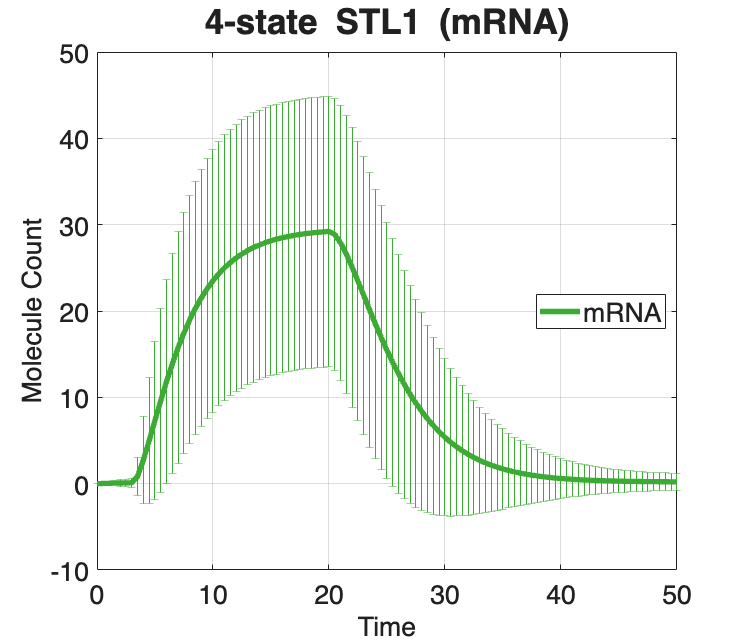
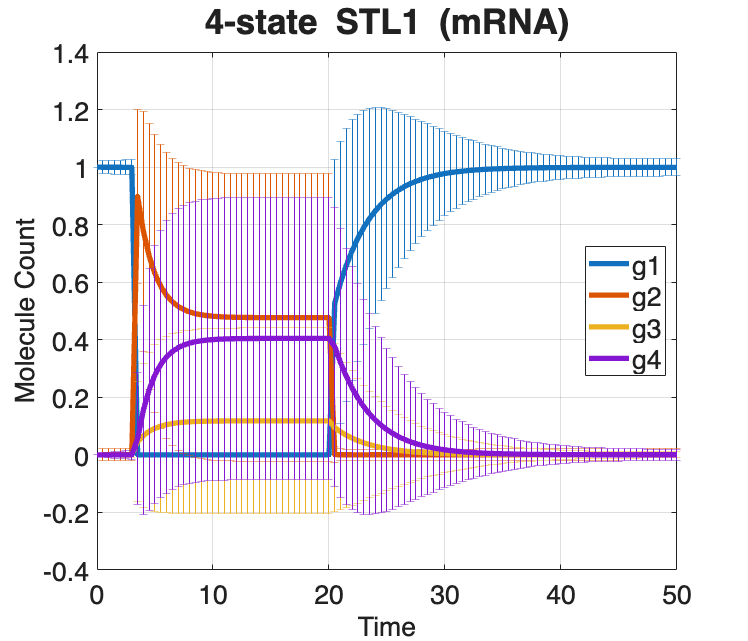

Contents
- SSIT/Examples/example_SI_Moments
- Section 2.2: Finding and visualizing master equation solutions
- Preliminaries
- Ex(1): Bursting Gene
- First moments from the "moments" solver
- Species trajectories from the ODE solver
- Compare ODEs vs moments
- Ex(2): STL1 (simple)
- First moments from the "moments" solver
- Species trajectories from the ODE solver
- Compare ODEs vs moments
- Ex(3): 4-state STL1
- First moments from the "moments" solver
- Species trajectories from the ODE solver
- Compare ODEs vs moments
- Plot results:
SSIT/Examples/example_SI_Moments
%%%%%%%%%%%%%%%%%%%%%%%%%%%%%%%%%%%%%%%%%%%%%%%%%%%%%%%%%%%%%%%%%%%%%%%%%
Section 2.2: Finding and visualizing master equation solutions
* Compute moments
%%%%%%%%%%%%%%%%%%%%%%%%%%%%%%%%%%%%%%%%%%%%%%%%%%%%%%%%%%%%%%%%%%%%%%%%%
Preliminaries
clear close all addpath(genpath('../src'));
% example_1_CreateSSITModels % example_2_SolveSSITModels_ODE % Load the models created in example_1_CreateSSITModels: % load('example_2_SolveSSITModels_ODE.mat') % View model summaries: Model_ODE.summarizeModel STL1_ODE.summarizeModel STL1_4state_ODE.summarizeModel % Set the times at which distributions will be computed: Model_ODE.tSpan = linspace(0,50,101); STL1_ODE.tSpan = linspace(0,50,101); STL1_4state_ODE.tSpan = linspace(0,50,101); %%%%%%%%%%%%%%%%%%%%%%%%%%%%%%%%%%%%%%%%%%%%%%%%%%%%%%%%%%%%%%%%%%%%%%%%%%%
Species:
offGene; IC = 1; discrete stochastic
onGene; IC = 0; discrete stochastic
mRNA; IC = 0; discrete stochastic
Reactions:
Reaction 1:
s1: 1*offGene --> 1*onGene
w1: kon * offGene
Reaction 2:
s2: 1*onGene --> 1*offGene
w2: koff * onGene
Reaction 3:
s3: NULL --> 1*mRNA
w3: kr * onGene
Reaction 4:
s4: 1*mRNA --> NULL
w4: dr * mRNA
Model Parameters:
{'kon' } {[2.0000e-01]}
{'koff'} {[2.0000e-01]}
{'kr' } {[ 10]}
{'dr' } {[ 5]}
Species:
offGene; IC = 1; discrete stochastic
onGene; IC = 0; discrete stochastic
mRNA; IC = 0; discrete stochastic
Reactions:
Reaction 1:
s1: 1*offGene --> 1*onGene
w1: kon * offGene
Reaction 2:
s2: 1*onGene --> 1*offGene
w2: onGene*koff/(1+Hog1)
Reaction 3:
s3: NULL --> 1*mRNA
w3: kr * onGene
Reaction 4:
s4: 1*mRNA --> NULL
w4: dr * mRNA
Input Signals:
Hog1(t) = (a0+a1*exp(-r1*t)*(1-exp(-r2*t))*(t>0))
Model Parameters:
{'kon' } {[2.0000e-01]}
{'koff'} {[2.0000e-01]}
{'kr' } {[ 10]}
{'dr' } {[ 5]}
{'a0' } {[ 5]}
{'a1' } {[ 10]}
{'r1' } {[4.0000e-03]}
{'r2' } {[1.0000e-02]}
Species:
g1; IC = 1; discrete stochastic
g2; IC = 0; discrete stochastic
g3; IC = 0; discrete stochastic
g4; IC = 0; discrete stochastic
mRNA; IC = 0; discrete stochastic
Reactions:
Reaction 1:
s1: 1*g1 --> 1*g2
w1: k12*g1
Reaction 2:
s2: 1*g2 --> 1*g1
w2: (max(0,k21o*(1-k21i*Hog1)))*g2
Reaction 3:
s3: 1*g2 --> 1*g3
w3: k23*g2
Reaction 4:
s4: 1*g3 --> 1*g2
w4: k32*g3
Reaction 5:
s5: 1*g3 --> 1*g4
w5: k34*g3
Reaction 6:
s6: 1*g4 --> 1*g3
w6: k43*g4
Reaction 7:
s7: NULL --> 1*mRNA
w7: kr1*g1
Reaction 8:
s8: NULL --> 1*mRNA
w8: kr2*g2
Reaction 9:
s9: NULL --> 1*mRNA
w9: kr3*g3
Reaction 10:
s10: NULL --> 1*mRNA
w10: kr4*g4
Reaction 11:
s11: 1*mRNA --> NULL
w11: dr*mRNA
Input Signals:
Hog1(t) = A*(((1-(exp(1)^(-r1*(t-t0))))*exp(1)^(-r2*(t-t0)))/(1+((1-(exp(1)^(-r1*(t-t0))))*exp(1)^(-r2*(t-t0)))/M))^n*(t>t0)
Model Parameters:
{'t0' } {[3.1700e+00]}
{'k12' } {[ 78]}
{'k21o'} {[ 192000]}
{'k21i'} {[ 3200]}
{'k23' } {[4.0200e-01]}
{'k34' } {[7.8000e+00]}
{'k32' } {[1.6200e+00]}
{'k43' } {[2.2800e+00]}
{'dr' } {[2.9400e-01]}
{'kr1' } {[4.6800e-02]}
{'kr2' } {[7.2000e-01]}
{'kr3' } {[5.9400e+01]}
{'kr4' } {[3.2400e+00]}
{'r1' } {[4.1400e-03]}
{'r2' } {[4.2600e-01]}
{'A' } {[9.3000e+09]}
{'M' } {[6.4000e-04]}
{'n' } {[3.1000e+00]}
Ex(1): Bursting Gene
%%%%%%%%%%%%%%%%%%%%%%%%%%%%%%%%%%%%%%%%%%%%%%%%%%%%%%%%%%%%%%%%%%%%%%%%%%% % Make a copy of the Bursting Gene model for moment equations Model_mom = Model_ODE; Model_mom.solutionScheme = 'moments'; [~,~,Model_mom] = Model_mom.solve; % Number of species nSp = numel(Model_mom.species);
Forming Propensity Functions.
First moments from the "moments" solver
Moments: [ (#means + #secondMoments) x nTimes ]
mom = Model_mom.Solutions.moments; % First nSp rows are the means ⟨x_i⟩ means_mom = mom(1:nSp, :); % size: nSp x nTimes
Species trajectories from the ODE solver
Get ODE solution:
Y_ode = Model_mom.Solutions.ode; % nTimes x nSpecies means_ode = Y_ode.'; % transpose: nSp x nTimes
Compare ODEs vs moments
Compare mRNA:
i_mRNA = find(strcmp(Model_mom.species,'mRNA')); den_mRNA = max(abs(means_ode(i_mRNA,:)), 1e-12); errMean_mRNA = ... max(abs(means_mom(i_mRNA,:) - means_ode(i_mRNA,:)) ./ den_mRNA); % Compare all species: den_all = max(abs(means_ode), 1e-12); errMean_all = max(max(abs(means_mom - means_ode) ./ den_all)); tol = 1e-2; % 1% tolerance if isequal(errMean_mRNA<tol,true) disp('Bursting Gene: mRNA mean from moments matches ODE within 1%'); else disp('Bursting Gene: mRNA mean from moments does not match ODE within 1%'); end if isequal(errMean_all<tol,true) disp('Bursting Gene: species means from moments match ODE within 1%'); else disp('Bursting Gene: species means from moments do not match ODE within 1%'); end %%%%%%%%%%%%%%%%%%%%%%%%%%%%%%%%%%%%%%%%%%%%%%%%%%%%%%%%%%%%%%%%%%%%%%%%%%%
Bursting Gene: mRNA mean from moments matches ODE within 1% Bursting Gene: species means from moments match ODE within 1%
Ex(2): STL1 (simple)
%%%%%%%%%%%%%%%%%%%%%%%%%%%%%%%%%%%%%%%%%%%%%%%%%%%%%%%%%%%%%%%%%%%%%%%%%%% % Make a copy of the (simple) STL1 model for moment equations STL1_mom = STL1_ODE; STL1_mom.solutionScheme = 'moments'; [~,~,STL1_mom] = STL1_mom.solve; % Number of species nSp = numel(STL1_mom.species);
Forming Propensity Functions.
First moments from the "moments" solver
Moments: [ (#means + #secondMoments) x nTimes ]
mom = STL1_mom.Solutions.moments; % First nSp rows are the means ⟨x_i⟩ means_mom = mom(1:nSp, :); % size: nSp x nTimes
Species trajectories from the ODE solver
Get ODE solution:
Y_ode = STL1_mom.Solutions.ode; % nTimes x nSpecies means_ode = Y_ode.'; % transpose: nSp x nTimes
Compare ODEs vs moments
Compare mRNA:
i_mRNA = find(strcmp(STL1_mom.species,'mRNA')); den_mRNA = max(abs(means_ode(i_mRNA,:)), 1e-12); errMean_mRNA = ... max(abs(means_mom(i_mRNA,:) - means_ode(i_mRNA,:)) ./ den_mRNA); % Compare all species: den_all = max(abs(means_ode), 1e-12); errMean_all = max(max(abs(means_mom - means_ode) ./ den_all)); tol = 1e-2; % 1% tolerance if isequal(errMean_mRNA<tol,true) disp('STL1: mRNA mean from moments matches ODE within 1%'); else disp('STL1: mRNA mean from moments does not match ODE within 1%'); end if isequal(errMean_all<tol,true) disp('STL1: species means from moments match ODE within 1%'); else disp('STL1: species means from moments do not match ODE within 1%'); end %%%%%%%%%%%%%%%%%%%%%%%%%%%%%%%%%%%%%%%%%%%%%%%%%%%%%%%%%%%%%%%%%%%%%%%%%%%
STL1: mRNA mean from moments matches ODE within 1% STL1: species means from moments match ODE within 1%
Ex(3): 4-state STL1
%%%%%%%%%%%%%%%%%%%%%%%%%%%%%%%%%%%%%%%%%%%%%%%%%%%%%%%%%%%%%%%%%%%%%%%%%%% % Make a copy of the 4-state STL1 model for moment equations STL1_4state_mom = STL1_4state_ODE; STL1_4state_mom.solutionScheme = 'moments'; [~,~,STL1_4state_mom] = STL1_4state_mom.solve; % Number of species nSp = numel(STL1_4state_mom.species);
Forming Propensity Functions.
First moments from the "moments" solver
Moments: [ (#means + #secondMoments) x nTimes ]
mom = STL1_4state_mom.Solutions.moments; % First nSp rows are the means ⟨x_i⟩ means_mom = mom(1:nSp, :); % size: nSp x nTimes
Species trajectories from the ODE solver
Get ODE solution:
Y_ode = STL1_4state_ODE.Solutions.ode; % nTimes x nSpecies means_ode = Y_ode.'; % transpose: nSp x nTimes
Compare ODEs vs moments
Compare mRNA:
i_mRNA = find(strcmp(STL1_4state_mom.species,'mRNA')); den_mRNA = max(abs(means_ode(i_mRNA,:)), 1e-12); errMean_mRNA = ... max(abs(means_mom(i_mRNA,:) - means_ode(i_mRNA,:)) ./ den_mRNA); % Compare all species: den_all = max(abs(means_ode), 1e-12); errMean_all = max(max(abs(means_mom - means_ode) ./ den_all)); tol = 1e-2; % 1% tolerance if isequal(errMean_mRNA<tol,true) disp('4-state STL1: mRNA mean from moments matches ODE within 1%'); else disp('4-state STL1: mRNA mean from moments does not match ODE within 1%'); end if isequal(errMean_all<tol,true) disp('4-state STL1: species means from moments match ODE within 1%'); else disp('4-state STL1: species means from moments do not match ODE within 1%'); end
4-state STL1: mRNA mean from moments matches ODE within 1% 4-state STL1: species means from moments do not match ODE within 1%
Plot results:
STL1_4state_mom.plotMoments(solution=STL1_4state_mom.Solutions,... speciesNames=STL1_4state.species(5), plotType="meansanddevs",... indTimes=STL1_4state_mom.tSpan, lineProps={'linewidth',4},... Title='4-state STL1 (mRNA)', TitleFontSize=26, LegendFontSize=20,... LegendLocation='east', Colors=[0.23,0.67,0.20],... YLabel='Molecule Count', AxisLabelSize=20, TickLabelSize=20); STL1_4state_mom.plotMoments(solution=STL1_4state_mom.Solutions,... speciesNames=STL1_4state.species(1:4), plotType="meansanddevs",... indTimes=STL1_4state_mom.tSpan, lineProps={'linewidth',4},... Title='4-state STL1 (mRNA)', TitleFontSize=26,... LegendLocation='east', YLabel='Molecule Count',... AxisLabelSize=20, TickLabelSize=20, LegendFontSize=20);

